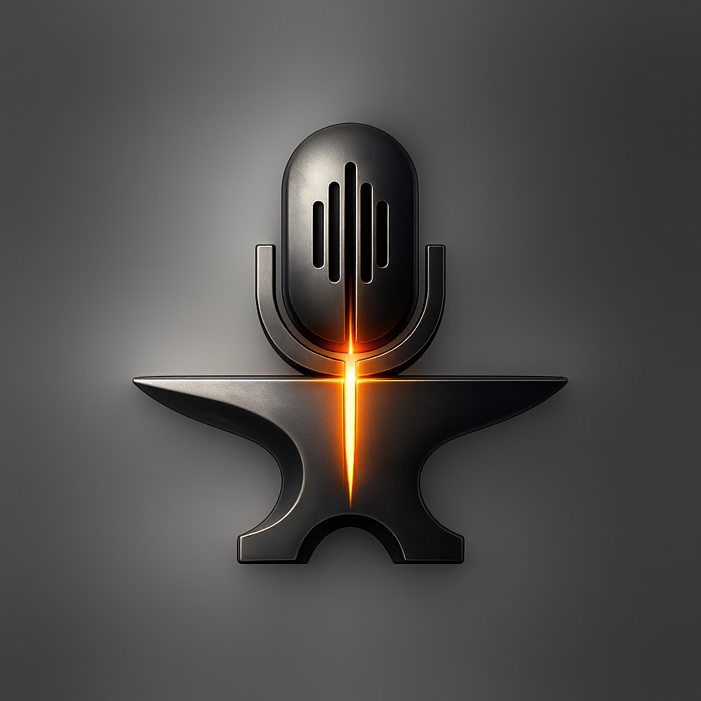

VoiceForgeVoiceForge is a cross-platform voice-typing tool for Windows, macOS, and Linux. Hold a hotkey, speak naturally, and your words appear at the cursor — in any app, browser, editor, terminal, or chat. No copy-paste. No window switching.
Lives in your system tray on every platform. Uses zero mic and zero network until you hold the key.
Native keystroke injection lands text wherever your cursor is — VS Code, ChatGPT, Word, Slack, terminals, forms — on Windows, macOS, and Linux.
Hold your hotkey to listen, release to type. Instant, deliberate, and never listening when you don't want it to.
Runs local Whisper (whisper.cpp) on your machine — no API key, no account, no internet. Cloud options (OpenAI, Deepgram) are one click away in Settings.
By default your voice never leaves your computer. Audio is only captured while the key is held, and never saved to disk. Keys are stored in your OS's native credential vault — Credential Manager, Keychain, or Secret Service.
Pick your language in Settings. Dictate in English, Spanish, French, and more.
A single Rust codebase built natively for each OS. Low memory, near-zero idle CPU, and a tray icon you'll forget is there.
The whole loop, every time you talk:
Default Alt + Space. The tray icon turns red — it's listening.
Your mic streams securely to your chosen provider.
Recording stops instantly and the transcript is finalized.
The text is injected at your cursor. Back to idle.
Free and open source. First-class support for Windows, macOS, and Linux.
voiceforge-windows-x64.exe above.Want a cloud engine instead? Right-click the tray → Settings… → set the provider and paste a key (optional guide below). Toggle Launch at Windows startup there too.
Cross-platform Rust core — build from source in two commands.
A signed, notarized .dmg isn't published yet, but the app is fully native on macOS: global hotkey, keystroke injection, tray icon, and Keychain-backed key storage all work out of the box.
git clone <your-repo-url> voiceforge
cd voiceforge
cargo run --releasemacOS will ask for Microphone and Accessibility permissions the first time (needed for the global hotkey and typing into other apps). Grant both in System Settings → Privacy & Security, then relaunch.
Install the audio/dev headers, then build:
# Debian/Ubuntu
sudo apt install libasound2-dev libxdo-dev pkg-config
git clone <your-repo-url> voiceforge
cd voiceforge
cargo run --releaseThe global hotkey and text injection are best supported on X11 today; Wayland support depends on your compositor's virtual-input protocol. The system tray uses your desktop's native tray/appindicator support.
VoiceForge is fully offline by default — you don't need any of this. But if you'd rather use OpenAI or Deepgram, plug in your own key and stay in control of usage and cost.
Go to platform.openai.com/api-keys, sign in, and click Create new secret key. Copy it — it looks like sk-proj-…. You'll only see it once.
Transcription is pay-as-you-go and inexpensive. Add a payment method or credits under Billing so requests succeed.
Open the tray → Settings…, make sure Speech provider is OpenAI, paste your key into OpenAI API key, and click Save key. It's stored securely in your OS credential vault — never in a file.
Place your cursor anywhere, hold Alt + Space, and speak. Prefer Deepgram? Choose it as the provider and paste a Deepgram key instead.